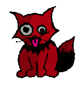

|

|
|
Introducción a Open Magick.
|
Open Magick es una página web bastante compleja en sus posibilidades y funcionamiento.
Dentro de ella encontrarás contenidos que tú puedes subir de forma pública o privada, blogs,
grupos de discusión e intercambio de material, mensajería privada y otras muchas opciones más...
e incluso si no quieres registrarte, podrás encontrar en las secciones de Contenidos material de calidad
cuidadosamente seleccionado por nuestros moderadores para tí.
|
Open Magick es un proyecto enorme, con una gran cantidad de ramificaciones. Lo que comenzó como una
pequeña herramienta para ayudarnos a compartir información sobre enoquiano entre dos personas, fue
poco a poco convirtiéndose en nuestras cabezas y en el código en todo aquello que querrímos de una
página web como mecanismo para ayudar a nuestra práctica mágica.
Así se planteó la idea de los distintos permisos de contenidos, así como una fuerte moderación
que mantuviese una cierta calidad en los elementos públicos, profundizando al mismo tiempo en la libertad de los
usuarios para fundar sus propios grupos y generar material. Tenemos la esperanza de que la estructura, si bien
sobredimensionada cuando la página comienza su andadura, sea capaz de albergar y sustentar un crecimiento que si
bien no consideramos imprescindible, tampoco deseamos frenar.
Los contenidos son más a la vista que uno se encuentra cuando accede a Open Magick. Se encuentran divididos
por categorías, entre las que ahora podemos encontrar "Magia Ceremonial", "Brujería y Paganismo", etcétera,
y se acceden mediante el menú de la izquierda en la web.
Cada sección de contenidos está a su vez dividida en tres niveles de prioridad: Importante, Opcional y Extra. Se puede
acceder a los artículos de cada nivel haciendo click en el submenú que aparece en la parte central de la pantalla, en
el cual también se indica entre paréntesis la cantidad de elementos perteneciente a ese nivel de prioridad. También
como se puede ver, hay otra opción llamada "Blogs", con la que se pueden consultar los blogs públicos clasificados en
esa categoría.
Para entender esta clasificación en tres niveles, hay que entender que no tienen nada que ver con la calidad de los mismos, sino
con lo esencial que resulta el tema tratado respecto a la categoría en la que se incluye. Es decir, que un texto
que explicase cómo realizar un ritual esencial como el LBRP en Magia Ceremonial iría en importante, mientras que un análisis
exclusivamente qabalístico sobre el mismo ritual podría ir a las secciones "Extra", al no tratarse de una cuestión esencial.
Tenemos los siguientes tipos de elementos en los contenidos:
- PDF: Documento en formato PDF.
- Artículo: Textos estándar de tipo artículo.
- Ritual: Se trata de textos de rituales, incluyendo el tiempo de realización y una referencia rápida de consulta.
- Ejercicio práctico: En estos elementos se guarda un texto para el ejercicio, así como la duración y la dificultad.
- Poesía
- Relato
- Imagen: El contenido es un fichero gráfico.
- Relato de una experiencia personal
- Reseña literaria.
Cuando se accede a la página de "Open Magick" sin estar autentificado como usuario, tan sólo aparecen en los
contenidos aquellos elementos clasificados como "Publicos" y aprobados por los moderadores de la página web. Sin embargo, existen otros
tipos de contenidos, dependiendo de sus permisos de acceso.
Por un lado, tenemos los contenidos privados. En caso de que te des de alta en Open Magick, podrás subir
contenidos indicando que los quieres para un uso privado, en cuyo caso te aparecerán en las secciones de contenidos junto con todos los
demás elementos. También puedes subir contenidos para tí y tus amigos, que aparecerán tanto para
tí como para la gente que haya aceptado tu amistad en la página. Por último, existen los contenidos grupales,
que aparecerán para quienes pertenezcan al grupo con el que está asociado el elemento.
Así, una vez dentro de Open Magick, el aspecto de la zona de Contenidos será bastante distinta a lo que lo serí
sin pertenecer a la página: en cada una de las secciones, divididos por las prioridades asignadas, se encontrarán juntos los
contenidos públicos de la página, los de los grupos a los que perteneces, los privados tuyos, y los compartidos con los amigos tanto
tuyos como de tus amigos.
¿Cómo distinguir unos contenidos de otros, y saber si este es de un grupo, si el otro es público...?
Bien, cada contenido tiene un pequeño icono cuando es listado, que puedes encontrar en el cuadro que presenta el elemento y
en el que se encuentra la puntuación: este icono es una "P" para público, "V" para privado, "G" para grupo y "A" para los que están
disponibles para los amigos.
Cuando te registras como usuario y escribes tu nombre y clave, verás cómo aparece un nuevo
menú precisamente en el lugar en el que antes escribías nombre y clave. Este es el menú
de usuario, desde el que puedes manejar la mayor parte de las cuestiones que te afectan.
Como usuario registrado de la página tienes un perfil personal al que puedes acceder
haciendo click en la opción de "Perfil". Aquí tienes tus datos personales,
así como tu estado actual y una galería de fotografías sobre las que tú y tus amigos
pueden comentar.
Pulsando en "notificaciones", accederás a un registro de las acciones que has llevado a
cabo, así como las de tus amigos. Cuando creas un nuevo grupo, cuando cambias tu perfil, cuando abres un
tema en un foro, se guarda una notificación que tú y tus amigos podeis consultar.
Puedes también, clickeando en "Amigos", consultar tu lista de amigos, buscar a gente
según sus intereses o datos para pedirles amistad, y consultar los perfiles de tus amistades.
Tienes también la opción de escribirte con otros usuarios registrados en la página mediante
la opción de Mensajes. Cuando tengas mensajes sin leer en tu buzón de entrada,
se te indicará en verde y entre paréntesis al lado de la opción correspondiente del menú
de usuario.
Cuando te registras en Open Magick pertenecerás automáticamente a varios grupos: el de "Avisos
Administrativos" (donde se proporcionan noticias sobre la página), el "General de Open Magick" (para
conversación informal entre la gente registrada) y "Soporte General" (donde puedes plantear tus dudas sobre el
funcionamiento de la web).
Sin embargo, eso no es todo. Puedes crear tus propios grupos o unirte a grupos dados de alta por otros usuarios. Tu grupo
tendrá un nombre y un lema, una descripción, y se te preguntará una serie de opciones: puedes hacer
que tu grupo no aparezca en los listados, que se pertenezca bajo invitación, etcétera. Al principio el
administrador del grupo será su creador, pero este podrá dar de alta como administradores a otros usuarios.
¿Qué se puede hacer con un grupo? En primer lugar, escribir en los foros del grupo, cuyo funcionamiento es
determinado por los administradores del grupo (si los usuarios normales pueden abrir temas o escribir). También se
pueden subir contenidos a la página web, que serán accesibles para todos los miembros que pertenezcan al grupo.
La sección de Trabajos representa la zona personal de trabajo del mago, y por ello podemos encontrar aquí tanto
los blogs como los bestiarios.
Los blogs de Open Magick están pensados con el objetivo de que puedan adaptarse especialmente como Diario
Mágico, para ayudar al mago a llevar un registro de su actividad, avances, etcétera. Por ello, los permisos de lectura
para los blogs están muy refinados (puedes incluso elegir a dedo quién quieres que pueda leerlos).
Además, las nuevas entradas que añadas a tu blog pueden ser de cuatro tipos. Además de las "entradas
normales", puedes relacionar una entrada con un ritual (presente en la zona de "contenidos" y al que tengas acceso), con un
ejercicio práctico (lo mismo) y con una criatura de un bestiario tuyo o de uno al que tengas permisos para acceder.
En la sección de Trabajos tienes también los bestiarios. Un bestiario es una lista de criaturas (ya los concibas
como servidores o como quieras) sobre los que puedes almacenar información, y con los que puedes relacionar las entradas
de tu blog.
Por último, tienes también en esta sección un registro de tus "habilidades mágicas". Esto es un sistema
que lista las habilidades básicas más típicas en la magia y te permite puntuarte y almacenar los cambios que
percibas en tí. Así, podrías indicar que tienes una habilidad de "principiante" en visualización e ir
apuntando tus progresos hasta que cambies de nivel a "Bajo-medio", etcétera. ¡Estos datos son siempre privados! No
pretendemos que nadie compita, sino proporcionar una herramienta con la que uno mismo puede, con sus propios parámetros,
evaluarse a sí mismo.
Entre las secciones de la página web accesibles incluso sin estar registrado, encontrarás una llamada "Árbol de la
Vida". En ella, hemos dispuesto un listado de correspondencias de los sephiroth y los senderos del Árbol de la Vida, y puedes
acceder a un sistema tipo exámen que te hará preguntas aleatorias sobre cada uno de los tipos de correspondencias (nombres,
colores y atribuciones planetarias de los sephiroth, letras hebreas, tarot y signos zodiacales relacionados con los senderos), o un
sistema completo de preguntas aleatorias sobre todas las secciones.
Open Magick es una página web en evolución constante. Si crees que hay algo que falta, si tienes una idea
o sugerencia, te animamos a que visites la sección con ese nombre: Sugerencias. Estaremos encantados de leerte
y tomaremos en consideración aquello que nos plantees. ¡Gracias!
|
 RSS
RSS